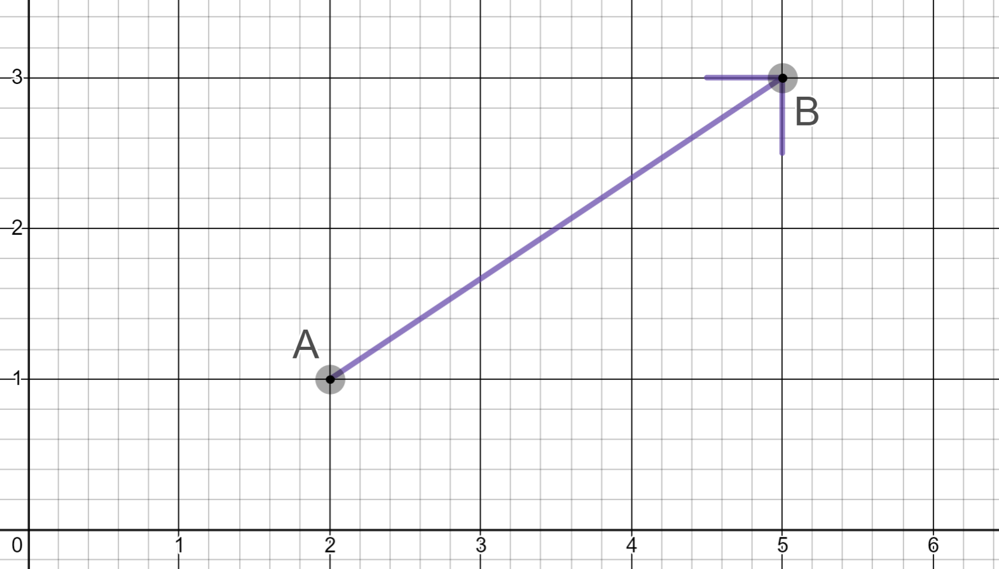
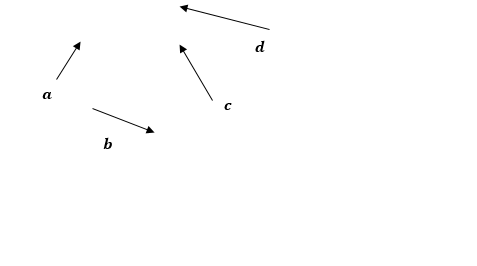

A directed interval \(\overrightarrow{AB}\), or directed line segment,
with tail A and head B, is the interval AB together with
the direction from A to B. Its length is \(|AB|\).
A vector \(\utilde{a}\) or \(\bold{a}\) combines a length and a direction. It is
represented by any directed interval \(\overrightarrow{AB}\) with that length and
direction, and we then write \(\utilde{a}\ = \overrightarrow{AB}\)
The length of a vector \(\utilde{a}\) is written as \(|\utilde{a}|\).

Here is a basic example of a vector. See if you can work out its length...
Opposite Vectors, Parallel Vectors, and the Zero Vector
The opposite of a vector \(\utilde{a}\ = \overrightarrow{AB}\) is the vector
\(-\utilde{a}\ = \overrightarrow{BA}\) with the same length and the opposite direction.
This means that \(\overrightarrow{AB}=-\overrightarrow{BA}\).
Two vectors \(\overrightarrow{AB}\) and \(\overrightarrow{PQ}\) are called parallel if the lines AB and PQ
are parallel. Their directions may be the same or opposite.
The zero vector \(\utilde{0}\) has no length and no direction, and is the only vector that is its own
opposite. It is parallel to every vector.
Multiplying a Vector by a Scalar
A vector can be multiplied by a scalar, and for all vectors \(\utilde{a}\) and scalars \(\lambda\) and \(\mu\).
Multiplying by zero:
\(\enspace\quad0\utilde{a}=\utilde{0}\)
Multiplying by 1:
\(\enspace\quad1\utilde{a}=\utilde{a}\)
Multiplying by -1:
\(\!\!\;(-1)\utilde{a}=-\utilde{a}\)
Associative law:
\(\lambda(\mu\utilde{a})=(\lambda\mu)\utilde{a}\)
Lengths:
\(\enspace\,\,|\lambda\utilde{a}|=|\lambda||\utilde{a}|\)
Parallels:
\(\;\;\quad\lambda\utilde{a}\parallel\utilde{a}\)
Vector Arithmetic
To construct the sum \(\utilde{a}+\utilde{b}\) of two vectors \(\utilde{a}\) and \(\utilde{b}\), place them
head to tail as \(\utilde{a}=\overrightarrow{OA}\) and \(\utilde{b} = \overrightarrow{AS}\). Then
\(\utilde{a}+\utilde{b}=\overrightarrow{OA}+\overrightarrow{AS}=\overrightarrow{OS}\).
OR, \(\utilde{a}+\utilde{b}=\overrightarrow{OA}+\overrightarrow{OB}=\overrightarrow{OS}\) as a diagonal on a
parallelogram.

The animation above demonstrates the addition of vectors.